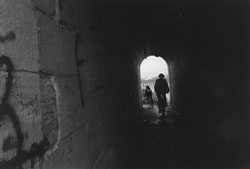

|
「あなた、日本人なんですか」
私の質問には答えず、男はまたゴミ袋の中を漁り始めた。ずずっと音がして、男が次に引っぱり出したのは長さ１メートルほどのガスホースだった。たいていのブルックリンの住人はゴミの分別など気にもかけない。だから生ゴミの中にこんなものが紛れこんでいることもあるのだ。
男は何度かまばたいてそのガスホースを眺めていたが、やにわにその端にかじりついた。苦しそうな表情でホースを口の中に押しこんでいる。
「ちょっと、やめた方がいいですよ。ただのホースじゃないんです。ガスホースですよ。金属でコーティングされているんだから」
私は男が飲みこもうとしているホースに思わず手をかけてしまった。男は顔がすべて複眼になったような表情で私を見て、ガホガホガホと何か言い始めた。ホースの端を飲みこんでしまっているためにうまく喋ることができないのだろう。胃カメラを飲んだまま看護婦をくどこうとするようなものだ。男の手が私の手を払い除けようとした。だが私はその手を逆に払い除け、男の口からガスホースを引き抜いてしまった。
「あああ、あ、あんた。何をするんだ。私のノルマなんだよ」
「見てられないですよ。あなた方、日本人でしょう。こんなところで壁から生えてきて、何をしているんですか」
「だ、だからノルマなんだよ。これ、全部平らげないと。あんたこそ、何だ。人の仕事の邪魔をして」
男が語気を荒げた瞬間、私の後頭部にゴミ袋が激しく当たった。背後の誰かが私に向けて投げ付けたらしい。
「何をするんですか」
このおぞましい集団が日本人だとわかった以上、私の口から出る言葉も感情をそのまま表わしていた。
「誰ですか、今投げたの。後ろから投げるなんて卑怯じゃないか」
ダスタシュートの上の方から、サカモト課長だろう、というくぐもった声が落ちてくる。同時にえへらえへら、にゃへらにゃへら、彼らは笑い始めた。
「ノルマだか何だか知りませんが、私は人が口に入れるものを作り続けてきた人間です。ゴミを食べるのを黙って見ているわけにはいかないんですよ。こんなところで、みなさん、何をしているんですか」
「何をしているって、言われても。ノルマだから」
正面の男がまたしつこく、ノルマがどうのこうのと言い始めた。
「何のノルマですか？」
「だから、負けないためにさ。いろいろあるだろう。サラリーマンなんだから」
サラリーマンなんだから、と言い切るところで、男の顔が卑屈なつくり笑いを見せた。自分でこねくり回した言い訳をいつしか切り札にしてしまう人々。そういった連中に共通した表情だ。私は何だか腹が立ってきた。
「ノルマって、誰が決めたんですか」
「知りませんよ。これはノルマなんだから。誰がどれだけ平らげたか、成績表に残されてしまう」
フジマキさんは十点評価で八点なんだ、という声がどこかから聞こえてきた。その間にもにちゃにちゃと生ゴミを頬張るいやらしい音はダスタシュート中に響きわたっていた。壁から現れたおどろ青泥光たちは、ライバルに負けないようにがっついて生ゴミを咀嚼しているらしい。目の前の男も他の男たちが気になるようで、腕は再びゴミ袋に突っこまれている。
「あなたたちがそうやってゴミを食べて、それを誰が評価するんですか」
「そりゃ決まってるでしょう。上司ですよ。上司以外に評価されるサラリーマンなんているんですか。すれ違う人に感謝されるサラリーマンがいますか。集団登校の小学生から拍手されるサラリーマンがいますか。ちょっと、あんた、人の仕事の邪魔ばっかりして」
もうこれ以上付き合ってられない、とでも言いたげに男が耳の周りの毛髪を掻きむしった。ぱらぱらと毛が抜け落ちていく。
「上司って、ここにあなたの上司がいるんですか」
「知らないよ。私たちは基本的に一人なんだよ。な、集団に見えていても一人なんだ。ここにいるものもみんな一人だ。集団に見えてもな！」
男の顔にあからさまな怒りが走った。汚濁した目を私に向け、サラリーマンたるものは、と今にも説教をぶちそうな雰囲気だった。
「私たちはこうやってゴミを食べているんだ。ということはつまり、ゴミがなくなるということだ。どこかで誰かが助かることを私たちはやっているわけだ。それなのにあんたは、何が食える何が食えないとうるさいことを言う。そんなことをいちいち私たちが気にしてられますか。この仕事はできる、この仕事はできないって、そんなふうにいちいち選別してられますか。私たちはねえ、意味なんか考えませんよ。ただ馬車馬のように、休みを知らない歯車のように働くだけだ。ねえ、そうすることによって、アダムスミスの神の見えざる手ってやつですか。その、なんだ、経済の安定とか、ものの価格とかが一定に図られているわけだ」
コホンと男が咳をした。思わせぶりな咳だった。この男は壁から現れるようになる前、つまり真っ当なサラリーマンだった頃、酒場でこんなことを後輩たちに言う男だったのかもしれない。
「私にはそういうことはよくわかりません。調理師ですから、おいしいものを、栄養のあるものを食べていただくことしか考えていなかった。しかし神の見えざる手ってのは、なんかちょっと喩えとして違うような気がしますけどね。百歩譲って、もしそんなものが本当に機能しているのなら、日本の没落もイタリアやアルゼンチンの経済崩壊もなかったはずですよ」
苦手な経済分野の話になって、私の言葉の勢いは弱まってしまった。だが、ここでこの腐りかけの男たちに負けるわけにはいかないという思いがやってきた。自殺をしたNの顔が浮かんできたからだ。東京を離れて群馬に越していく時の、妻と娘の小さく丸まった後ろ姿がよみがえってきたからだ。
「それとも、十年前の日本経済も、今の危機的状況も、神の見えざる手のひとつの遣り口なのですか。私の親友は経済が盛り上がった頃に金を借り過ぎて、いや、金を借りてくれと銀行から頼まれて、結局首をくくって死んでしまいました。日本の繁栄の象徴である首都高速で首を吊って。お陰で私もとばっちりを受けた。身に覚えのない多額の借金を背負って人生を転げ落ちた。これもすべて神の見えざる手なのですか」
にちゃにちゃと生ゴミを咀嚼する音に混じって、調理師なら飯だけ作ってろ、うるさいんだよ、青臭いんだよ、という声が壁のどこかから投げかけられた。こめかみの圧力が一瞬高くなった。
「違いますよ。そうじゃないです。調理師だからこそ、生きている人間のことを考えなけれなならないんです。サラダ用のトマトと煮込み用のトマトのアミノ酸の含有量の差まで知らなければらない。そのアミノ酸がスープの味をどう変え、ストレスにどういう影響を与えるかを学ばなくてはならない。今世界はどうなっていて、人は何に苦しんでいるかのを知らないで、どうやって心を暖める料理を作ることができるんですか」
言い切ったところで、マルセロが拍手をした。その乾いた小さな音がダスタシュートの中に妙に響き渡る。だが当然のことながら、壁から現れた男たちからの賛同の声はない。彼らはもくもくと目の前の生ゴミを平らげるだけで、その景色はまるで夜光するキノコ、ツキヨタケが群落のままぶるぶると震えているような奇怪さだった。背後でトイレットペーパーの芯を食べていた完ハゲの年輩の男がゆるゆると喋りだす。
「心を暖める料理って、あなた。そんなあやふやなものをシメの言葉に使って欲しくないですね。そういう言葉はね、コックとか大工とか落語家とか、手先目先で仕事をする職人にありがちな自己陶酔ってやつですよ。自分の料理で誰かがほっと一息ついてくれた。ああ、だから私には働く意味がある。そんなわかりやすいところに仕事の意味を置いているのではないですか。だったら聞きますが、あなたの料理で一息ついたお客はどんな仕事をしている人なんですか。その人もわかりやすい仕事をしているのですか。もしそうではなかったら、あなたの料理を食べる資格はないのですか。わかりやすい仕事の方がわかりにくい仕事よりも立派だってことですか。それにね、もし、あなたが言う通り、心を暖める料理があるのだとしたら、あなたはもう一財産築いていたんじゃないですか。ここはダスタシュートの底ですよ。こんなところでゴミといっしょに紛れこんでいるということは、つまり、なんだ、あなたも色々あったんじゃないのかと私は思うんですがね。何を食っちゃいけないとか、栄養がどうだとか、そんなふうに説教できるような生き方をあなたはしてきたのですか。胸を張ってそう言えますか。あなたこそ、何ものなんですか」
痛い所を突かれた。電話口の娘の声がよみがえる。私は家族さえ守ってやれなかった男だ。
「仕事っていうのはね、わかりやすい仕事もあるけれど、わかりにくい仕事もあるんですよ。すべてひっくるめて仕事って言うんです。そうでなければ、人間の築いたものは大きすぎて、複雑すぎて、もう回らない。誰だって、もっとわかりやすい仕事をしたかった。でも、わかりやす過ぎるほど大きな会社に入ってしまえば、個人個人は逆にわかりにくくなる。なんのためのノルマかってことも含めてね。しかしだからといって全員がさぼってしまえば、その瞬間から会社は機能しなくなってしまいます」
さすが、人事のトドロキさんだ、という感嘆の声があがった。ゴミを咀嚼する音が一時的に止まり、ぱらぱらと拍手さえも起きた。私には返す言葉が浮かばなかった。なぜなら彼の言うことはいちいち的を得ているように感じられたからだ。
壁から生えてゴミを食べている男だというのに、おまけに私を論破しようとしているというのに、私は彼に対して不思議と敵意のようなものは抱かなかった。無気味だとも思わなかった。
本来なら私は、こういった人に自分の料理を食べてもらいたかったのかもしれない。私は父を失って以来、年輩の男性に弱い。どこかでいつも亡き父の面影を偲んでしまう。それにこれだけ理屈の言える人なら、心を暖める料理が存在することぐらい本当は知っているはずなのだ。ただ仲間たちをかばうためにサラリーマンとして正統性のある言葉を並べてみただけなのだろう。
「すいません。私は別に皆さんのことを馬鹿にしたわけではないのです。ただ、ゴミを食べる皆さんを見ているのが・・・」
「いいんですよ。まあ、私たちは実際、誰からも尊敬はされない」
「私は皆さんの身体のことを心配して」
「そういうことは、だからもういいんですよ。いいんです。身体のことと言われても、御覧の通りのこの身体ですから」
「あの、どうして、皆さん。壁から・・・」
男は私のそのつぶやきには答えてくれなかった。代わりに、再び仕事の話をし始めた。
「これまでだって、息子にすら見せられない仕事をずっとやってきたんですよ。家族にわかりやすく説明してやることもできなかった。私がいなければ会社は回らないようになる。ゴールデンウイークだって何だって出社しました。だが、説明はできない。そういう仕事もあるのですよ。あなたにはそれをわかっていただきたい。ここにいる者たちのためにもね。みんな一生懸命働いてきて、そして今はこうなっているわけです」
やはりそうだった。この年輩の青泥い壁男は仲間たちのために隙のない言葉を浴びせてきたのだ。ガスホース男のように目が険しくなっていないのは、私に対する怒りが湧いていないからであろう。
「失礼しました。私がいたのはずっと板場や調理場で、みなさんのように大きな会社で働いたという経験がないものですから」
「いや、まあね。はははは」
男の笑い声は急に寂し気になった。目を細くして遠くを見ている。壁の向こう側に忘れてきた日々を思い出そうとするような視線だった。
「会社が回らないと思っていたのは、まあ、たしかにそうなんですが、でも本当のところはどうなのかと言いますとね、どうやら勘違いという部分もある。私がいなくても、会社はちゃんと立ってました。長年の人事から開発部に回されて、それでさらにニューヨーク支社ですよ。その時気が付きました。私がいなくても会社はびくともしない」
ゴミを食べている者はまだいるようだったが、何人かはこのトドロキさんの話を黙って聞いているらしかった。にちゃにちゃという咀嚼音がまばらになる。
「ニューヨークではね、物件を買い漁りました。ちょうどライバル社が、アメリカの心とも言われているロックフェラーセンターを買収した頃で。あの時は日本の経済はまさに破竹の勢いでしたね。ジャパン・アズ・ナンバー・ワンとか言われましてね。トルコの学校教育では、戦争に負けて本当の勝負に勝った国ジャパン、なんて社会科で教えていたぐらいですよ。まさに日本経済絶好調。本社からは厳しい指令も飛びましたが、その分豊富な軍資金も用意されていました。マンハッタンすべてを日本企業が買い取るんじゃないかと恐れられたぐらいですよ。ロックフェラーセンターの持ち物であるNBCって放送局がありますね。あそこの有名な番組で、サタディーナイト・ライブってのがあるんですが、当時は日本憎しでね、番組で使われる世界地図から日本を消してしまいました」
あの頃は無敵だった。方々からそんな声が漏れてきた。しかしそれらの声には力が込められていなかった。くすんだ、かすれた声だった。
「まさかこんなふうに私たちが落ちて行くとは。こんな事態を誰が想像したでしょう。もはや競争力では韓国や台湾にも勝てない。経済の調子が良かった頃はね、あれはアメリカの腕の中で踊らされていただけなんですよ。太平洋戦争でミッドウエイ海戦まで日本人は日本の勝利を疑っていなかった。同じですよ。日本は二度負けたんです。そしてもはや自力では立ち上がれなくなってしまっている。我が国は滅びるだけです。でもね、誰もさぼっていたわけじゃないんです。誰もに強烈なノルマがあり、誰もが懸命にそれを追い掛けていたんです。私たちはほんの数年だけでもね、世界一だったんですよ。それなのに・・・あのね、ライバル社は、ロックフェラーセンターを、買った時の半値以下で売り渡したんですよ。その責任は誰がとるんです。私だって高層ビルを二十も三十も会社の金で買ったんです。それがまったくのクズ投資にしかならなくて、その責任はね、とてつもなく大きかったですよ。本社から見れば私たちは戦犯ですから。酒を飲ませて可愛がった部下がね、こう、目を吊り上げて、そろそろ辞めていただきたいと、それができないなら腹を切れと、これまた酔った席で酔ったふりをして言う。そういう、私たちはあれですから」
トドロキさんの声に込められた悲哀が煙のように私にまとわり付き始めた。彼は悲しくなると語尾に力を入れる癖が出るらしい。それがダスタシュートに木霊する。
「御覧下さい。私たちの頭を。薄いのもいれば、完全に頭皮が露出しちゃってるのもいますが、私たち、ちゃんと毛があったんですよ。十年前、マンハッタンに赴任してきた頃にはふさふさしていたんですよ。雨の降り始めは手の甲や顔に落ちる水滴でわかったんですよ。それが最後はね、情けないことに頭に直接雨が落ちてくるようになった。仕事も人生ももうダメだと思った時、私は久しぶりに自分の顔を見てがく然としました。トイレの鏡に映った自分の顔を見てね。私はこんな顔じゃなかった。それにちゃんと毛があったんです。まあ、ハゲるハゲないってのは、女性ホルモンと男性ホルモンの按配でしょうが、それ以外にも理由があって。あの、不自然なストレスがずっと負荷としてかかり続けると、男はすっかりハゲてしまうようですね。見て下さいよ、私たち。全員薄くなっています。こんなこと、若い時分には想像もしてなかった」
「それはすっかり、私は自分の体験からわかります。私、こんなことを言っても理解してもらえないでしょうけれど、実はあの、大きな蛇に出会いまして。その蛇のうろこに映る自分の顔が耐え切れませんでした。伊豆で育ったのですが、私もその頃にはこんなふうになってしまう自分を想像していませんでした」
壁から突き出した男たちはもう誰も咀嚼していなかった。トドロキさんと私の成り行きに耳を澄ませていた。
「ここがゴミ溜めじゃなければ、何かお作りしたいのですが。いかんせん、こんな場所ですから。調理師として今できることがないのが、私にはすごく残念です」
「いや、いいんですよ。壁に飲みこまれていない魂とは久しぶりに出会った。伊豆で育ったとおっしゃいましたね」
「はい。伊豆の城ケ崎で」
「ああ、川奈のゴルフ場の向こう側の」
「はい、そうです。漁師のせがれで」
「そりゃまた、わかりやすい仕事だね」
何人かがハハハッとサラリーマンらしい調和的な笑い方をしてみせた。私はその瞬間、こんなふうに壁から生えている青泥い男たちでなければ、つまり生前の彼らであれば、意外と仲良くできた人たちなのかもしれないと思った。そして同時に、自分が勝手に彼らを死者と決めてかかっていることに少し驚きもした。
「どうでしょう。伊豆でお育ちでしたら・・・」
「何か？」
「あなたの得意な料理の話だけでもしていただけませんですか」
トドロキさんがこう言うと、そうだ、そうしてくれ、という声が方々から上がった。私の正面のガスホース男も、うんうんと頷いている。
「話だけで終わらせてしまうなんて、それは」
「いいんですよ、話だけでも。私たち、ずっと日本に帰っていないものですから。聞きたいな。聞かせてください」
壁から生えた男たちの視線がすべて私に集中してしまった。私はそのような状況の中で故郷の伊豆を思い浮かべる。季節はもう秋だ。天城に登れば絶景の富士が見える。そして目の前には、ワラサやカンパチなどの回遊魚が回り始めた豊潤な海がある。
「それでは、こういったことは初めてなのですが。本当に残念ですが、言葉だけで料理を作らせていただきます」
まるで本物の宴が始まったかのように、数人がばらばらのタイミングで、イヨッ、と声をかけてきた。口笛を吹く者もいる。私はゴミ溜めの底で想像力だけを日本に戻す。
「さて、海の中は二ヶ月遅れと申しまして。天城連峰に栗やアケビが実り出す頃、城ケ崎の波の向こうには生命力の濃い豊かな季節が訪れます。伊豆ですとちょうど今頃から、ブリのひと回り小さな弟分でありますワラサですとか、あるいは目と目の間の額の部分にハチの字があります間八（カンパチ）などが潮に乗って現れます。ニューヨークでもブリは食べられますのでそれほど珍しくはありませんが、カンパチとなるとなかなか手に入りません。こちらでは俗にイエローテールなどと申しましてブリとカンパチをごちゃ混ぜにしておりますが、あれは養殖物のハマチを日本からわざわざ空輸している冷凍食品の類でして、駐在員の皆さんがどれだけ日本のいきのいい魚料理を恋しく思われたか、板場の私にはよくわかります。心中ご察しいたします。たとえば、カンパチのネギ醤油なんていかがでしょうかね。刺身用のカンパチの身、これは白身と赤身の中間色のような桃色のものが手に入れば一番理想的なんですが、いずれにしましてもこの季節ですと腹身がよろしいでしょう。脂がのっています。さあ、その腹身を左手でこうしまして軽く押さえ、右手で柳刃をスーハースーハーと呼吸する要領で引いて切っていきます。厚さはせいぜい二ミリ。フグの薄づくり三枚分ぐらいの厚みがよろしいでしょう。それを手早く皿に円盤状に並べます。このあたりはフグと同じ美意識が要求されます。薄いおつくりですから皿の向こう側が見えてしまう。何も高価な焼き物や絵皿を用意する必要はありませんが、ちょっとは色にも気を遣って欲しい。私はカンパチと同じ桃色の器を用意することに決めています。さて、こいつは出来上がりましたらラップをかけてさっと冷蔵庫へ。ほんの四、五分冷やすことでカンパチを舌にのせた時の触感が変わります。この間にネギ醤油を作りましょう。ただの醤油じゃない、ネギ醤油。というわけで、これ。ここに持ち出しましたのは、何の変哲もないネギです。できれば埼玉や群馬あたりで取れる太い関東ネギが好ましいのですが、まあそう贅沢は言ってられませんので、普通のネギ。ただし、青い部分ではなく、根っこに近い白い部分を使ってください。それをこうやってみじん切りにします。これでもかってぐらいみじん切り。そしてひとつかみを皿に盛り、上から純正野田醤油、丸大豆の醤油をたっぷりとかけます。これでネギ醤油はできあがり。そして冷蔵庫から桃色のカンパチの薄づくりを出す。さあ、食べていただきましょう。いってもらいましょう。箸でカンパチをつかむ。それをネギ醤油の上に落とす。カンパチで醤油色に染まったネギのみじん切りをくるむ。さあ、どうぞ、そのまま口の中へ。どうです。黒潮で遊んだカンパチと秋風で引き締まりつつあるネギのハーモニー。そこに野田醤油だ。で、ここに用意しましたのが、きりっと冷えた純米酒。本日は大分より西ノ関を用意させていただきました。きゅっといってください。きゅっと。海が弾ける。ネギが歌う。そこにすーっと、こう、純米酒のしっとりとした冷涼な風が」
あー、というため息があらゆるところから漏れてきた。たまりませんな、という声に続き、何とかしてくれ、という悲鳴も混じる。私は自分のしていることがよくわからなくなってきた。私は喜ばれることをしているのだろうか。それとも。
「ありがとうございます。カンパチのネギ醤油ですか。食べてみたかったなあ、そういうものを。たしかに秋は魚がうまいですね。私は伊東で、大きなオニカサゴの煮つけをいただいたことがあります。あれはうまいものだった」
トドロキさんが水平線を眺める船長のように視線を遠くにやった。
「もう少し、続けてもらえませんか」
「私は構いませんが、しかし、皆さんにとって、こういうことが」
「いいんです。もう少しだけ」
壁から生えている男たちも、「もう少し、もう少し」とせがむような声で私を煽り立てた。どうやら言葉だけの料理を続けるしかなさそうだった。
「わかりました。それなら、たった今トドロキさんがおっしゃったオニカサゴ、なんていかがでしょうか」
イヨッ、と盛大な拍手。完全に駅前居酒屋サラリーマン宴会風である。
「オニカサゴという魚。かなり深いところに棲んでいます。水深で言いますと１５０メートルから３００メートルぐらいです。もう太陽の光が届かない真っ暗な海の底です。おまけに岩礁帯に棲む魚ですから、漁師が網でこれを取ることは非常に難しい。したがってかなり高価な魚です。私の父親は漁師だったんですが、こういった根魚は割に合わないといつもこぼしていました。おまけにこのオニカサゴ。背鰭と鰓から飛び出た刺に猛毒を持っています。ちょいとした不注意でこれに刺されるとあっという間に手首まで腫れ上がり、あまりの痛さにもがき苦しみことになります。もう病院に行くしかない。しかもこの刺が相当に鋭く頑丈にできていまして、長靴のゴムだって刺し通すぐらいですからこれまでいったいどれだけの釣り人が病院に運ばれたことでしょう。というふうにまあ、このオニカサゴ、面相は悪いし、猛毒は持っているし、なかなか釣れないし、とやっかいな魚なのですが、伊豆あたりでは周年これを狙う釣り人もいるぐらいマニアの垂涎の的。それはなぜかと申しますと、とにかく、この魚。うまいのです。うまい、うまい、うまい。白身の上品な、それはもう姿形とは似ても似つかない味。一般に魚は醜いほどうまいと言われていますが、まさにこのオニカサゴこそがその代表足り得るでしょう。それでは本日のメインといたしまして、このオニカサゴの酒蒸しを味わっていただきましょう」
ずるっとよだれを吸いこむ音が聞こえた。ガスホースをくわえていた男だった。トドロキさんは目をつぶっている。もちろん誰一人ゴミを食べる者はいない。
「先ほども申しましたようにこのオニカサゴ、猛毒がございます。ですからうろこを落とす前にこうやって、これ、調理用のハサミです。これでできれば背鰭と鰓の刺を落としておきましょう。包丁でトントン叩いてもいいんですがね、刃が欠けてしまうほど強い刺ですから、私はゾーリンゲンのハサミで落としちゃいます。そしてさらに、腹鰭と背鰭をこうやってえぐりとって、こいつをね、焼き網の上にのせてしまいます。弱火ですよ。トロ火でもいいぐらい。何のために鰭を焼くのか、ということは後のお楽しみです。さて、肝心の身の方です。これはうろこを落としましたら、皮は引かずに背骨から包丁を入れて三枚におろします。どうです、この切り口。あっさりとした淡いピンクでしょう。真珠色だという人もいます。素晴らしい白身ですよ。エビなど食って生きてますからね、すごく贅沢な魚なんです。これを皮ごと厚さ２センチぐらいに切っていく。あれほど大袈裟な形をした魚だったのに、身はたったこれだけなの、と文句も言いたくなりますが、まあ、そこは抑えていただいて。そういうOLのお嬢さんもたまにはいらっしゃいます。さて、蒸し器に入れる皿の上には日本酒でさっと拭いた根室の昆布を用意します。東シナ海の薄っぺらな昆布じゃなくて、厚手の、北の海の昆布です。これを酒で拭き、その上に今ザク切りしたばかりのオニカサゴを並べる。そこに上からもう一度酒をかける。できれば飲む時と同じで、質のいい純米酒か何かにして下さい。そして、蒸し器に入れて待つこと七分。はい、ふたを開けて様子を見てみましょう。ぶわっと盛り上がる湯気の底で、真っ白く弾け切ったオニカサゴの身が見えます。皮の部分がぷるんとひっくり返り、今まさに食べてくれと身が叫んでいるようですね。しかし、ちょっと待って下さい。ちょっと待った、ちょっと待った。待つことも肝心です。何をかって。はい、こちらに用意いたしましたのが、伊豆で取れたカボスです。熱々の皿を皆さんの前に置きます。はじけ切ったオニカサゴにカボスをじゅわっとかける。湯気が皆さんを誘っている。さあ、そのまま口に入れて下さい。ほ、ほ、ほい、熱い。熱いけれども、伊豆の深海のエキスと山の柑橘系が今、皆さんの舌の上で絡み合っている。どっしりとした北の昆布を寝床にしてですよ。さあ、純米酒をぐーっといきましょうか」
いく、いく、とダスタシュートの底は合唱のようになった。
「いや、待って下さい。私は何のために先ほどオニカサゴの背鰭と腹鰭を焼き網の上に載せたのでしょう。ほら、弱火であぶられて、こんがりいい色になっています。香ばしい匂いが漂ってきたでしょう。こちらに用意いたしましたのが、ちんちんの熱燗。これを丼にざーっと注ぎます。そしてそこにこのこんがりいい色の背鰭、腹鰭を入れる。ふたをする。そして待つこと五分。いいですか、よく見て下さいよ。一瞬ですからね、この匂いは。ふたを開けますよ。開けますよ。はい。どうぞ。どうだ、この香りは。これがフグもびっくり、オニカサゴの鰭酒。褐色になった酒には鰭から旨味が出て、もうこれを飲んでしまうと普通の日本酒が飲めなくなってしまう可能性があります。さあ、皆さん、このオニカサゴの鰭酒を飲みながら、そちらの酒蒸しをやって下さい。カボスはけちらず大胆にね」
あー、あー、と方々から弾に当たったような切な気な声が聞こえてくる。吐息にのった絞り出すような声ばかりだ。手の上でマルセロまでが垂涎の眼差しで私を見ている。
「鰭酒、飲んでみたいなあ」
「オニカサゴだってよ」
「カボスを絞ってねえ」
「日本に帰りたいねえ」
「まったく、日本に帰りたいねえ」
思った通り、感嘆の声は哀愁へと転じていった。私はそれを気にかけていたのだ。
「トドロキさん、やはりこんなことは・・・」
「いいんですよ。みんな充分に楽しんだ。仮に切なくなったとしても、ああ、こういう心の動きは本当に久しぶりです。私たちはずっと壁に溶けていたのですから。あなたがゴミに紛れて落ちてきてくれて良かった。失礼ですが、あなた、お子さんは」
「はい、中学生の娘が」
そうですか、それはそれは、とトドロキさんは言い、そこで一瞬私の奥底を見るような目付きになった。こういった異境の人たちには何もかもお見通しなのかもしれない。
「離れて暮らしているんですけどね」
私が慌てて付け加えると、トドロキさんはその先の言葉を手で制止しようとした。
「色々おありでしょう。でも、私たちに比べれば何ということはないですよ。私たちはもう二度と会えないのですから。私のせがれは今年ちょうと二十歳です。もうきっと、煙草も酒もやっているでしょうが」
トドロキさんの語尾がちょっと揺れた。ひくついた話し方になった。私は気を遣って視線をそらす。目の前にはガスホース男の顔があった。彼も切な気な表情になっている。手はまだゴミ袋の中に突っこまれていたが、それを食おうとする勢いはもう感じられなかった。ガスホース男は突然自分のことを話し始めた。
「ノルマ、ノルマ、ノルマで、ノルマを達成したら、また次のノルマが来るんですよ。目的のある人生の方が豊かだと人は言うけれど、本当のところはどうなのか。特に次々とやってくる目的というのはね。人をすり減らすだけじゃないのかね。私もきっと、どこかですり減ってしまったんでしょう。あの日の私はどうかしてたなあ。日本に電話したんだけれど、つながらなくて。何だかとても疲れていて。私だって、息子がいるんですよ。だから冷静に判断すれば、銀行なんてやめて、しばらくぶらっとして、それで家族で色々話し合えば良かったんだ。ただね、銀行という組織に飲みこまれてしまうと、その冷静な判断が消えてしまうというか。私の裁量に任される部分もありますから。それがまさか、連邦法に違反しているなんて思いもしませんでした。逮捕が確実になった時、私は何だか、本当にどうかしていた。靄の中を一人で歩いているようで」
「その男は飛び下りたんですよ。アパートの十五階の窓から」
ゴミ袋の隙間から誰かがささやいた。
「うるさいよ。あんたは首を吊ったんじゃないか。しかも会社のトイレでだ」
ガスホース男がそう言い返したところで、ダスタシュートの底は静まり返ってしまった。
「みんな自ら命を断ったんですよ。ここにいるものは」
トドロキさんが沈黙を嫌がるように、丁寧な口調で語り始めた。
「ここに宿っているものは全部で十一の怨念です。そのうちの七つが首吊り、三つが飛び下り、ひとつが服毒で逝きました。みんなそれぞれの本社からニューヨーク支社に飛ばされて、まあ、懸命に働いてきたんですがね、その、なんというか、結果が出なかった。むしろ多大なる迷惑を方々にかけてしまった。男は仕事で結果を残せないと・・・四十代、五十代にもなって戦犯扱いされてしまうと、もうねえ。それに、銀行員なんかは、いろいろと秘密も知っていますから、誰かが一人死ねば助かる人間も出てくる。私は買収が仕事でね、ビルを乗っ取るために法律ぎりぎりのことをずっとやって来ました。いや、正確に言うならば、法律を越えていました。ただ弁護士を使って法律を適当にねじ曲げていただけで。そういうことを何年もやって、心を鬼のようにして他人に接してきて、それなのに自分がやってきたことが途方も無い赤字を生み出したことを知った時は、足腰が立たないような気持ちになったものですよ。あのまま会社をやめて、日本に帰れば良かったんだ。でもそういう勝手なことが、なぜか私たちの世代にはできない。知っていますか。日本人の五十代の男性の筆頭死因を。癌でもなければ心臓病でもない。自殺ですよ。日本人の男はね、自殺が一位。そういう国なんだ」
ガスホース男がそこでくぐもった笑い声をあげた。
「あのね、ふふふ、あそこでぼーっとしている男ね。彼は農薬を飲んで逝ったんですよ。ニューヨーク警察だってちゃんとそうやって発表したんです。それなのに銀行としてはね、心筋梗塞ということで済ませてしまいました。自殺じゃ救いがないし、銀行のイメージにも傷が付くということで。だから日本から駆け付けた彼の遺族はみんな心筋梗塞だと思っている。コレステロールに気をつけなきゃと思っている。日本人の特性でね、自殺を自殺として認めないところがあるんだな。印象悪いから。だから隠された自殺が山ほどあるんですよ。急性なんたらという病気で誰かが逝っちゃった場合、それは自殺のことが多い。ですから、五十代の死因の一位が自殺だというのはちょっと間違った表現です。本当はね、五十代の死因のだんとつ一位が、つまり二位を大きく引き離して自殺なんですよ。だから彼はね、せっかく自殺したのに、誰にも波紋を投げかけることなく消えてしまったんですよ。まったく骨折り損のくたびれ儲けってやつですよ」
農薬を飲んだ男は言い返すわけではなく、ただ黙って下を向いていた。そしてぼそっとつぶやいた。
「銀行なんか、どうでも良かったんだ、今思えば。だけどあの頃は、そこだけが私の生きる世界だと思いこんでいた・・・失敗したよ。私にはやり残したことがたくさんある。子供の参観日に出てあげたかった。子供の成長をただ黙って、じっと見守ってやりたかった」
「へっ、農薬を飲んだ時には、そういうふうに考えられなかったのかい？」
「私だって、人のことは言えませんよ」
ガスホース男のものの言い方はあまりにぞんざいだった。私は咄嗟に、彼の言葉を遮るように自分の話を始めていた。
「私も首をくくったんですよ。もうほとんど皆さんと同じで、あの世とこの世の間を行ったり来たりしていました。最後の最後に娘の声が聞きたくなって」
「いや、やめましょう。どうも、湿っぽくなるし、それに悔やまれることがそれぞれありますから」
トドロキさんが私を制止しようとしたが、私は続けていた。
「私はどういうわけか、ネズミたちが現れて、それで助かったのですが。本当ならあのまま死んでいたはずです。皆さんと同じですよ。私も疲れ果ててしまって。保証人になったばかりにすべてを失い、離婚まで招き、挙げ句の果てに犯人扱いされて、それでもう本当に全部嫌になりました。すり切れてしまいました。神経も頭の毛も。だから何かに誘われるように首をくくったのですが、しかし、皆さん。私はまたこの暗がりから這い出て、生きていこうと思っているのです。ですから皆さんの思いを、皆さんの家族に届けることができます。どれだけ記憶できるのかわかりませんが、これから一人一人のお名前をおっしゃって下さい。そして御家族に向けた言葉も下さい。私は日本に帰った時に、できる限り皆さんの気持ちをお伝えしますよ。ね、皆さん」
壁男たちが息を飲んで私を見ている。
「まずは、トドロキさん、いかがですか。何か御家族に伝えたい言葉はありませんか」
「いや、私は。いや、私は」
トドロキさんは下を向いてしまった。しかしほんの数秒後、真摯な顔をこちらに向けてきた。
「すまなかった、と伝えてもらえますか。それから息子に」
「息子さんに」
「毎日を大切に生きろ、と、それだけ伝えてもらいますか」
「わかりました。記憶しました。私は間抜けで、運動神経もゆるゆるだったんですが、どうもこの記憶力だけは誰にも負けなくて。何たって一回も使ったことのない英単語でさえいまだに覚えていますから。コオロギはa cricket。さて、それでは次にガスホースのあなた。はい、お名前は」
「いいんですか、私も」
ガスホース男は少し照れた様子だった。
「私、フジマキと申します」
「あ、為替ディーラーで銀行に大穴開けちゃって、それで逮捕直前に自殺なさったあの有名なフジマキさん」
「そうですよ。だからそう言ったじゃないですか。それでまあ、私も息子になんですが、すまなかった、ということと、あとは争わずに楽しく生きろ、とそう言ってもらえますか」
「わかりました。フジマキさんは、争わずに楽しく生きろ、と。さあ、それでは次の方」
私はこの行為に全神経を集中させてしまった。少しでも他のことを考えると、全部で十一人の壁男たちの言葉を記憶できないと思ったからだ。かつて大学受験でも調理師国家試験でも発揮したことのない集中力が私にみなぎった。まずは自分の周囲から、そして徐々にゴミ袋の隙間へ、あるいは上方へと私は質問を重ねていった。中には粘液とともに涙をとめどもなく流す者もいて言葉が聴き取りにくいこともあったが、共通していることは彼らが遺族に対してまず、すまなかったと詫びること。それから子供たちに対して「生きろ」と伝えていることだった。私は薄明かりの中で左の手の平を見つめ、そこに右手の指先で彼らの言葉をなぞっていった。少年の頃から、何かを暗記しようとするとこの癖が出た。
「えーと、それでは繰り返しますよ。まずはトドロキさん、すまなかった。息子さんに対しては、毎日を大切に生きろ、と。それからガスホースのフジマキさん、すまなかった。息子さんに、争わずに楽しく生きろ、と。えーと、続いてサカモトさん、同じく、すまなかった。お嬢さんに対して、見栄えが悪くても生きているだけでいいじゃないか。それからイトイさん、同じく、すまなかった。お二人の息子さんに対しては、のびのびと好きなように生きろ。ですね。えーと、続いて・・・」
「タカハシさん、見て見て見て」
いつの間にか私のそばからいなくなっていたマルセロの声が聞こえてきた。
「マルセロ、今集中しているんだから。話し掛けるんじゃない」
「タカハシさん、見てよ。見て見て」
「なあ、マルセロ。言っただろう。今話すと、せっかく記憶した言葉が・・・」
マルセロがどこにいるのか捉えようとして、私の目はダスタシュートの壁を向いたまま止まってしまった。あまりのことに、せっかく頭に詰めこもうとしている言葉がすべて吹き飛んでしまいそうだった。
「・・・そんな、ことが」
男たちはすっかりと姿を消していた。
彼らがハゲた頭を青泥色に光らせて突出していた場所には、同じような妖しい光を放つキノコが生えているだけだった。
「マルセロ・・・嘘だろう」
「タカハシさんは集中していてわからなかった。ずっと言葉を覚えようとしててわからなかった。マルセロ知ってる。タカハシさんは集中していてわからなかった」
「どういうことだ。だって、いったい、どういうことだ」
「みんなキノコに変わった。すまなかった、と言って、それからキノコに変わった。みんなキノコに変わった。すまなかった、と言って、それからキノコに変わった」
私はゴミ袋の上にへなへなと座りこんでしまった。
「だって、こんなことが。マルセロ、ああ、私はすっかり憂鬱だよ。死んだ人たちの言葉を聞いたんだから」
「マルセロ知ってる。だから憂鬱の砂嵐なんだ」
「憂鬱の砂嵐って、マルセロ・・・そういう意味なのか」
だとしたら私は耐えられない。憂鬱の砂嵐に対して私が耐えようとしたのは自分に投げかけられる痛みだった。それなのに起きつつあることはまったく逆のパターンだった。私は他人の悲しみを、切なさを、苦しみを目撃し続けなければいけないのか。しかもぶつけられた砂の数だけだ。まるで深夜ラジオの人生相談を独りでやり続けなければいけなかった男のようだと私は思った。日本レストランのお客の噂話で聞いたのだが、その男は毎週何千もの他人の苦しみを数年にわたってDJとして受け続け、挙げ句、精神に異常を来たして日本を脱出、今は廃人同然になってマンハッタンで壊れた生活をしているという。わかりやすい勇敢さが招いたわかりやすい結末だった。私には耐えられない。そんなことは耐えられない。

「マルセロ・・・ここから、出よう」
青泥色に光っているキノコを見つめながら私はつぶやいた。トドロキさんであり、ガスホースのフジマキさんであったキノコ。
頭の芯がじりじりと痺れていくようだった。私は彼らをしっかりと見た。彼らが生ゴミを咀嚼するの見た。彼らの話も聞いた。どうやって生きてきて、どうやって死に結びついてしまったのか、家族に言いたかったこと、そのエッセンスのひとつひとつをはっきりと聞いたのだ。それに私だって自分のことを話した。娘のことも言った。言葉だけで料理を作ってみせた。あの時の、日本に帰りたい、という彼らの声。あれがすべて幻だったというのか。それともマルセロの言うように、彼らは本当に怨念からキノコに変わってみせたのか。わからない。私にはわからない。ただ、とてつもなく辛い。こういうことは苦しい。
「なあ、マルセロ。一刻も早く、ここから出よう」
マルセロはどこにいったのか、返事がなかった。どこかのゴミの隙間に埋もれてしまったのだろうか。
「マルセロ、どこにいったんだ」
心細くなって声を大きくした時、青泥色のキノコたちが発する妖しい光が一瞬強くなった。キノコはかすかに震えているようでもあり、波長が感じられるほど繊細に光の濃淡を変えているようでもあった。私にはそんなふうに見えた。
間違いない。
光は強くなってきている。
昔、佐藤先生が教室で見せてくれた懐中電灯の幻灯のように、それぞれのキノコから発せられる光は暗闇の中で絡み合い始めた。ダスタシュートの一部の壁をスクリーンに、それらはもやもやとした明暗をそこに浮かび上がらせている。妖しい光が作り出す、妖しい明暗だ。宇宙から降りてくる光の膜にも似ている。
日本を飛び出してニューヨークにやってくる時、飛行機の窓から緑色のカーテンのようなものが闇夜に見えた。もしやと思ってスチュワーデスに尋ねると、彼女はニコリともせずに「あれがオーロラです」と事務的に言ったのだった。あの時、私の心は舞い上がった。スチュワーデスは年中見ているだろうから事務的になったのであろうが、私にとっては初めてのオーロラだった。遠く宇宙から降りてくる光に言葉ではうまく説明できない衝動を抱いた。何十億年も前に、私たちの遠い先祖がああやって降りてきたのではないかとも思われた。キノコが作り出しているもやもやとした光の動きは、あの淡い光の帯にたしかに似ていた。
すっと、焦点が合うように、光の中に動く像が現れた。
階段のようなものが見える。
そこを何かが上がっていく。
焦点がはっきりと合ってきた。階段をあがっていくのはどうやら人間のようだ。
色が鮮やかになっていく。人間の後ろ姿がはっきりと見える。
二十歳そこそこの若い男だ。金髪の白人だった。皮ジャンバーを着て、擦り切れたジーンズをはいている。なぜか靴ははいていない。素足のまま階段を上がっている。
階段の突き当たりのようなところで彼は一瞬立ち止まり、そこで錆びた鉄色のドアを何度か蹴りにかかった。かすかに彼がドアをキックする音も聞こえてくる。
ドアは何度目かの乱暴な蹴りで鍵が壊れたらしい。引きつったような金属音を立ててゆっくりと開いた。若い男はドアの間をくぐった。向こう側に青空が見える。青空の下には街が見える。どこかで見たことのある風景だ。ニューヨークとは違った低い街並。欧風の屋根屋根。パリだろうか。
男は青空の中に出て行く。彼はきっとどこかのビルの屋上を歩いているのだ。風景の端にエッフェル塔が見えた。やはりパリなのだ。
男は屋上を歩いている。素足のまま歩いている。
いったい何をしようとしているのか。
男がこちらを振り向いた。蒼白な表情だった。目におろおろと涙をためている。口のあたりが奇妙にひくついている。まさか。
男は屋上の縁に立った。男の顔がもう一度大写しになる。何かぶつぶつとつぶやいている。男は胸の前で十字を切る。
「おい、これは何のつもりだ」
私がそう漏らすのと同時に、男は屋上から飛び下りた。ダダン！という音が続いて聞こえ、方々からの悲鳴も重なって伝わってきた。
「おい、何なんだ、これは」
男が飛び下りた映像には、もう次の風景が映っていた。
酒に酔っているのだろうか、大柄な中年の男が空になったウイスキーのボトルを前にして椅子に座っていた。上半身が不安定に揺れている。この男も白人だった。腹が大きくふくれあがり、インディゴブルーのシャツが灰色のセーターからだらしなくはみでていた。
男はゆらゆらと揺れている。
そしてやにわにサイドボードの引き出しに手を出し、一丁の拳銃を取り出してみせた。男は拳銃を見つめ、しかめっ面をする。
「まさか、ちょっと、やめてくれ」
私がそう言うや否や、男は銃口を顎の下にあてがった。
パンという乾いた音が聞こえ、男の後頭部から真っ赤な血しぶきが上がった。拳銃を握ったまま椅子ごと後方にひっくり返る男。ウイスキーの空のボトルが虚しく床に転がった。
「もういい。やめてくれ」
私は目をつぶった。しかしそうしていてもかすかな音は壁の映像から伝わってくる。じっとしていられない焦りが胸にこみあげてくる。私はキノコに向かって大声で叫ぶ。
「どういうことだ。何を見せているんだ」
目を開けると、映像はいきなり増えていた。キノコから発せられる光はサーチライトのように交錯し合い、全部で十一の映像を壁に写し出していた。
目の前では車に排気ガスを引きこんでいる男が映っていた。車の窓に目貼りをして、ホースを車内に突っこんでいる。助手席には顔面から血を流している女が乗っていた。彼女は息をしていない。そして後部座席には、まだ三歳か四歳の男の子が絵本を抱いたまま横になっていた。日本人の家族だ。絵本によく知っている漫画のキャラクターが描かれていた。男の子は状況に気が付かず、すーすーと寝息を立てている様子だ。そこに真っ黒な排気ガスがかぶさってくる。
「やめろ。やめろ。やめろ」
私は自分でも信じられないぐらいの大声を出していた。身体が震えるぐらいのありったけの声だった。
男の子の顔が苦しそうにゆがんだ。父親らしき男はハンドルを握ったまま前方を見つめている。
「やめろ。やめてください。頼むからやめてください」
なぜか私は哀願するような声で壁に向かって叫んでいた。突然声がひっくり返って、鼻の穴にまで痛みがこみあげてきた。
「子供がいるんですよ。子供は生きているんですよ」
ハンドルを握っている男が苦しんでいる男の子の方を振り向いた。
「そう、やめるんだ、やめるんだ！」
だが男は咳をし始めた男の子の首に手を回した。「ごめんな」という声が小さく聞こえきた。
「おい、やめろ！」
いくら何でもこれ以上見ていられない。私はその映像を避けるように背後を振り向く。
高層ビルからスカートを翻らせて少女が落ちてくる映像が目に入る。
「やめろ」
身体の向きを変える。そこには湯舟を真っ赤に染めて裸のままぐったりとしている若い女がいた。手首を切ったのだろう。血がとめどもなくあふれている。
その横には線路の上を轟音をたてて走りこんでくる列車があった。プラットホームの縁に中年の男が立っている。
「ああ」
私が呻く前に男は宙に身体を飛ばしていた。列車の警笛が激しく響き、男は画面の外にはじき飛ばされていた。
目をつぶる。だが、つぶっていられない。全部で十一の映像から悲鳴や苦悶の声が次々とあふれてくる。目を開ける。前方に首をつろうとしている中年の女。その横には長大な滝の上に裸足のまま立っている中年の男。
「勘弁して下さい。私が何をしたというのですか」
私はゴミ袋の上で身体を突っ伏した。咽がぶるぶる震えて仕方なかった。どうしたらいいのかまったくわからなくなっていた。しかしキノコから発せられる光はゴミ袋の上にも像を結んでいるようで、そこには塾帰りと思われるまだ十歳前後の日本人の男の子が映っていた。男の子は口をへの字に結んでいる。泣き腫らしたような目だ。誰かからいじめられたのだろうか、それとも強く叱られたのだろうか。塾のマークが付いた鞄を背中に背負ったまま盛り場らしい場所を歩いている。新宿ではないだろうかと思われた。そのまま男の子は雑踏の中を走り出した。鞄を左右に揺すりながら懸命に走っている。そして信号待ちをしている人々をかき分けるように路面に躍り出た。
「やめろ。やめろ！」
私は叫びながらすぐ近くにあったキノコをむしり取っていた。それを手でぐちゃぐちゃに引き裂いてゴミ袋の上に叩き付けていた。それがかつてのトドロキさんやフジマキさんの怨念の成れの果てだとしても、もう我慢することはできなかった。私は手当たり次第に同じことをやった。手が届く範囲で青泥色のキノコをつかみ、それを粉々になるまで指先でちぎり、あたりにばらまいた。
だが、ダスタシュートの底に闇はやって来なかった。むしろ前よりも強烈に明るくなった。私にちぎられたキノコの断片は、そのそれぞれから青泥光を放ち始めたのだ。独立した光の柱が見えなくなるほどそれらは交錯し合い、ダスタシュートの壁すべてをマルチビジョンのような映像の渦に変えていた。そしてその何百という映像が、今まさに自ら死を選ばんとする人々の最後のシーンに焦点を当てていた。
私は声もなくうろたえていた。どうしたらいいのかまったく見当がつかなかった。
ビルや橋からの飛び下り。崖から二人で手をつないで落ちてくるカップル。腕に空の注射器を刺している男。錠剤を両手にためてそれを一気に飲みこむ少女。頭からガソリンをかぶり、マッチで火をつける僧侶。自動小銃を自分に向けてぶっ放す兵士。首を吊る子供。腕をナイフで切り刻んでいる少年。全身にコードを巻いてタイマーをセットしている男。
壁のすべてに、あらゆる国々の、あらゆる人種の最後が映し出されていた。それぞれから伝わってくる悲鳴はすべてが溶け合い、木霊しあい、ワーンと共鳴していた。
私はただ呆然としたままそれを見ている。おそらくもう数分で頭がおかしくなってしまうであろうと思われた。だが、そのパニックですら一撃で吹き飛ばすような映像を私は見てしまった。そしてゴミ袋の上で立ち上がったのだった。
斜め上方の壁に見覚えのある顔が映っていた。
小学６年生の時の担任、佐藤先生だった。蛾人間になって私の前に現れたかもしれない佐藤先生だった。先生は私たちが卒業する直前に急性垂涎で亡くなったのだ。しかしその映像の中ではまったく違うことが起きようとしていた。
先生は梁から縄を吊っていた。椅子の上によじ登り、その縄に首を入れていた。
「先生。どういう・・・ことだ」
佐藤先生の目はまっすぐ前を向いていた。口で何かをぶつぶつと唱えていた。そしてそのまま椅子から身体を踊らせてしまった。梁にかけられた縄は一直線になり、先生の顔がひどく苦し気にゆがんだ。
私は下を向く。あまりの衝撃に下を向く。ワーンと共鳴する悲鳴がまとわりつく。その中でガスホースのフジマキさんが話していた言葉を思い出した。日本人は自殺を嫌がる。印象が悪くなるから。だから急性何とかで亡くなったことにするんだ、という部分がよみがえってきた。
「先生・・・先生」
ゴミ袋の上でも引き続き、断末魔の映像が浮かび上がっている。だがそこに佐藤先生の苦し気な顔が重なってしまい、もはや自分が何を見ているのかもわからない状況だった。
咽の震えは終わることなく続き、息をするのが苦しかった。
ゴミ袋に写し出される砂漠の映像。
私は判断できない状況でそれを見ている。佐藤先生の顔を重ねながら。
砂漠の上では数人の人々が丸くなっている。動いていない。頭上にはぎらぎらと燃えるような太陽がある。画面は彼らに近付いていく。
触れると火傷をしそうなぐらい熱をもった映像だった。そこから熱風が吹き出しているのではないかと思われた。女が倒れていた。衣服から出た部分が火傷をして水膨れになっている。頬はひどく腫れ上がり、唇が乾き切って開けられていた。その周囲で三人の子供たちが同じように倒れていた。やはりひどい火傷状態で腕を宙に延ばしたまま絶命している。
メキシコ人ではないかと思われた。国境を越えて出稼ぎをしようと試み、毎年多数のメキシコ人家族がシンジケートに騙されて砂漠の真ん中で放り出される。彼らはそのまま太陽に灼かれ、水を欲しいと繰り返しつぶやきながら死んでいくのだった。私が今目撃しているものはその悲劇の一部なのかもしれない。
もう心底見たくないと思った。本当に逃げ出したいと思った。だが目はそこに吸い付いてしまう。映像はさらに流れる。砂漠で骸になった子供たちの横でやはりひからびている男。
「・・・カルロス」
男は口ひげをたくわえていた。天を見つめたまま乾いてしまった目は、誰を恨むでもなく、ただ虚空と化していた。だが私にはわかった。それはカルロスだった。ニューヨークで一人暮らしを始めた私を、人生をやり直そうと思った私を、暖かい情で支えてくれようとしたカルロスだった。私からの借金を踏み倒した時、故郷に戻ったら家族を連れてもう一度やってくると置き手紙があった。私はその手紙に書かれた内容をまったく信用していなかった。だが、カルロスは、こんなことまでして。
「カルロス・・・カルロス・・・」
首を吊った時みたいに、空気がひゅーひゅーと咽から苦し気に漏れた。握りこぶしで何度もゴミ袋を叩いた。壁も叩いた。私はもう頭のどこかがはずれたようになっていた。完全にいかれてしまうことが簡単に予測できた。いや、もういかれてしまっているのかもしれない。
「マルセロ、どこにいるんだ。マルセロ、助けてくれ。助けてくれ」
私は幼児のように、ゴミ袋の上で転がり、頭を抱えていた。
「マルセロ、どこにいるんだ」
壁には相変わらず数々の映像が映し出されている。今また一人の中年女性がビルから飛び下りた。その横で銃を自分に向けている男。
「マルセロ、ここから出してくれ」
カッターで手首を切っている少女。毒らしき液体をコップに分けているグループ。
「出してくれ、出してくれ」
二十五歳ぐらいの若い女性がどこかの屋上の縁に立っていた。どこかで見たような顔だった。
全身に熱い針を刺されたようなショックがやってきた。
「まさか。おい、まさか」
その顔は私が首を吊ろうとした時も現れた。死んだハムスターを手の平に載せてきょとんとしていた。しゃべられないからかわいちょうだね、と言って、しくしくと泣き出した。暗い穴の上から私を見ていた。しゃべられないからかわいちょうだね、と言って。
「カリン、何をやっているんだ」
屋上に立っていたのは、未来の自分の娘だった。娘は素足で屋上の縁に立って揺れている。遠くに夕暮れが見える。娘の頬から涙が幾筋も流れている。
「やめろ。カリン、やめろ。お父さんここにいる」
私は娘の映像が映っている壁に駆け寄った。
「どうした。何があった。お父さんここにいるぞ」
私は壁をどんどん叩いた。できる限りの大声で映像の中の娘へここにいることを伝えようとした。
「やめろ。やめるんだ。お父さんここにいる！」
娘は屋上の縁でずっと揺れている。爪先が縁から飛び出している。夕暮れの中を鳥が数羽飛んでいくシルエットが見える。パトカーの音が遠くから聞こえてくる。カリンのために走ってきているのだろうか。
娘は下界をちらりと眺めた。片手で口を押さえている。
私はもう声が出ない。走り終わったマラソンランナーのように腹が何度も波打ち、空気だけが「お父さんここにいる」を繰り返している。壁を殴る両手からは鮮血が吹き出している。
「・・・カリン・・・カリン」
娘が縁にしゃがみこんだ。頭の芯が白くなっていく。私はもし娘が次の行動に出たら気を失ってしまうのかもしれない。
娘の爪先がいよいよ縁から大きく飛び出した。身体ががくっと揺れる。
「カリン！」
その瞬間、映像は音もなく消えてしまった。娘もどこかの夕暮れの屋上もきれいに消えてしまい、ざらざらとしたダスタシュートの壁に戻ってしまった。
私は背後を振り向く。
大型のネコほどに大きくふくらんだマルセロがそこにいた。
「マルセロ、食べちゃった。マルセロ、恐かったけど、食べちゃった」
突然現れたマルセロは前脚でキノコの切れ端をつかみ、それを口に運んでいた。ヒゲの生えた口のまわりが青泥色に光っている。
「マルセロ、恐かった。マルセロ、キノコ食べちゃった」
マルセロはうなだれている私にもう一度そう言うと、ゴミ袋の上に点在しているキノコの破片を次々と口に運び始めた。娘の映像に気を取られていてわからなかったのだが、既にかなりの数のキノコが姿を消していた。壁に映し出される自殺の風景も減っていた。
「おい、マルセロ。今私は、娘が・・・マルセロ」
生きているネズミがたった数分でこれだけ大きくなるものだろうかと思うぐらいマルセロは巨大になっていた。だがその不気味さよりも、私はふいに映った娘カリンの映像に心を奪われていた。足腰はがくがくと震えたままだったし、うまく言葉を発することもできない状態になっていた。
ぶちん、と音を立てて、マルセロの背中に食いこんでいた赤いリュックサックのストラップが切れた。マルセロはそんなことはおかまいなしでキノコの破片を食べ続けている。
映像はどんどん減っていく。ダスタシュートはその勢いにのって元の暗がりに戻りつつあった。そしてマルセロはネコの大きさを通り越えて、柴犬ほどのサイズにまでふくらみつつあった。
「マルセロ、今、私の娘が」
マルセロは私の言葉を無視して黙々とキノコの破片を食べ続けている。
「・・・そんなに食べて大丈夫なのかい？」
私は彼をいたわりつつも、そう言ってやれることしかできなかった。精一杯の心境だった。未来の娘らしき映像が頭から離れない。
「マルセロ、恐かった。キノコ食べちゃった。マルセロ、キノコ食べちゃった」
マルセロは時おり私の方を見ながら掃除機のような勢いでキノコを食べ尽くした。最後の最後まで壁に残っていた映像。それはどこかの中年男が首を吊る風景だった。テーブルの上に乗ってロープの輪に首を入れている。ロープが引っ掛けられているのは天井の何かのようだった。
男はテーブルから飛び下りた。ぎゅっと嫌な音がして、ロープが一直線になった。男は足をばたばたと動かしている。そしてたった十秒ほどで動かなくなってしまった。
「マルセロ、恐かった。キノコ食べちゃった」
そこで映像は消えた。すべての映像が壁から消え失せた。ダスタシュートの底はまた元の暗闇に戻った。巨大化したマルセロの息遣いだけがフンフンと聞こえてくる。
「マルセロ・・・私は何を見ていたんだ」
「マルセロ知ってる。憂鬱の砂嵐ののろい」
フンフン、フンフン、とマルセロはあたりを嗅ぎ回っている様子だった。
「それで、色々な国の人々の自殺の瞬間を・・・見たのかい」
「マルセロ知ってる。あれは起きてしまった憂鬱と、行われている憂鬱と、これからの憂鬱」
「なんだって？」
マルセロが私の膝に摺り寄ってきた。犬ほども大きくなってしまったので、かなりの重量感がある。体温も大きく暖かく感じる。暗闇の中でマルセロの口だけがぼののんと青泥色に光っている。
「マルセロ知ってる。昔と今とこれから。マルセロ、キノコ食べちゃった」
私は叫び疲れ、泣きつかれ、すっかりかすれてしまった声でマルセロに話し掛ける。
「マルセロ。実は大変なものを見てしまったんだ。小学校の時、急性垂涎で亡くなってしまった先生が、実は首をくくっていた。それから、私の同僚だったカルロスが家族もろとも砂漠で遭難していた。もうひとつあって、これは大変言いにくいことなんだけれど、どうやら・・・そう、マルセロの言葉を信じるなら、これから十数年後の風景の中で、私の娘が素足でビルの屋上に立っていた。私はすっかり、腰を抜かしてしまった。やはり何があっても日本に帰るべきだと思う」
だが、マルセロは暗闇越しに意外なことを私に話し始めた。
「タカハシさん、それ違う。タカハシさん、それ違う。マルセロ知ってる。タカハシさんが浴びた憂鬱の砂嵐の砂つぶてはのろいを持っている。マルセロ知ってる。もしタカハシさんが日本にこのまま帰れば、のろいは多くの人を巻きこんでしまう。タカハシさんは、マルセロ知ってる、憂鬱の砂嵐と戦うために、メキシコに行くしかない。メキシコで四つの宝を手に入れて、砂嵐ののろいを燃やす。マルセロ、知ってる。その四つの宝でタカハシさんの娘や多くの人も助かる」
フンフン、フンフン、マルセロは私に息をぶつけながら力強くそう言った。
「メキシコ、四つの宝。なんだ、それ？」
「マルセロ、知ってる。タカハシさんが見た、砂漠のカルロス一家。マルセロ、知ってる、屋上の娘さん。それすべてこれからのこと。起きたことでもないし、行われていることでもない。マルセロ、助ける方法知ってるかもしれない。マルセロ、それがタカハシさんだと知ってるかもしれない。メキシコ、四つの宝がみんなを助ける。人間は今いちどそれを知る時。タカハシさんなら、その冒険をやれるかもしれない」
蛇のうろこに映った情けない中年男の顔が浮かんできた。あのみすぼらしい、やつれ切った東洋人の顔。あの男ほど、冒険という言葉から遠い存在はないのではないだろうか。だが、娘とカルロス一家は、まだその暗たんたる未来を知らずに生きているのだ。その未来を変えられるのなら、この命何を惜しむことがあろう。
「マルセロ、私はどこにだって行くよ。メキシコだな。四つの宝だな。私は憂鬱の砂嵐と戦うんだな」
「マルセロ、知ってる。タカハシさんは冒険する」
「でも、どうやって、メキシコまで行くんだ」
鼻息フンフンのマルセロはそこで珍しく、アヒャヒャヒャッと驚いた声を立ててみせた。同時に私の膝の上に、どこかに潜んでいたらしいもう一匹のネズミが這い上がってきた。（第５回了）
|